Lily-1.0 Advanced Coloring Book Generator!
Overview
Lily-1.0 is a cutting-edge coloring book generator designed for children, seamlessly blending a user-friendly interface with sophisticated backend technologies to inspire creativity and provide endless fun.
 |
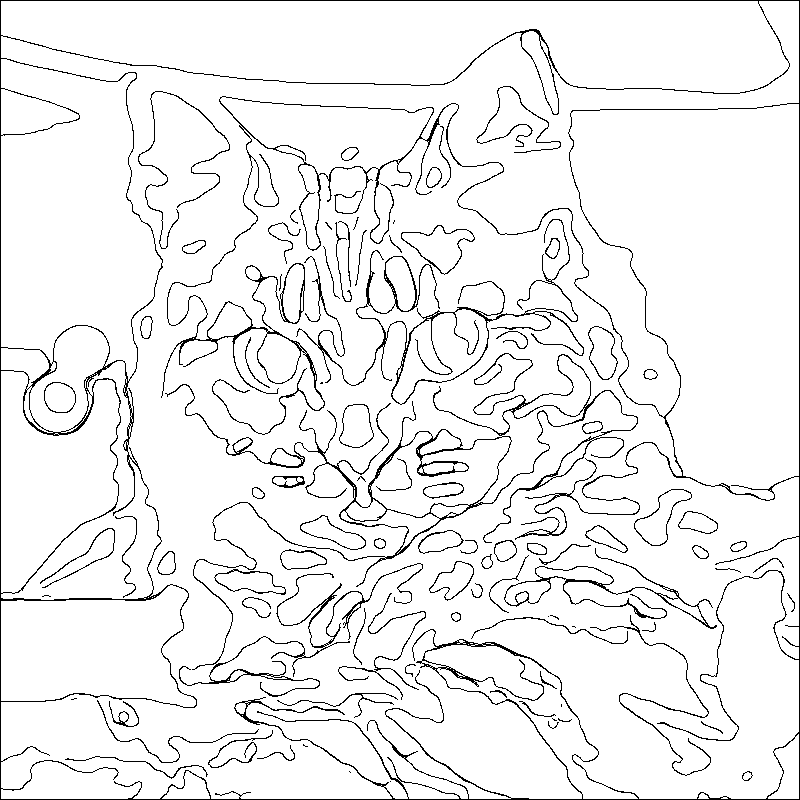 |
Key Features
Intuitive Interface
The main layout features a single “Reset Session” button, allowing users to effortlessly start fresh by clearing chat history and session states.
Interactive Chat Assistant
Engage with Lily-1.0 through a chat interface powered by GPT-4o-mini. The assistant guides users through three creative options to generate personalized coloring pages.

Three Generation Options
Random Coloring Page
Instantly generate a random coloring page. Lily creates a unique prompt, and upon approval, DALL-E 3 generates a downloadable image.
Description-Based Coloring Page
Create a custom coloring page based on your own descriptions. Whether you provide a detailed description or just a few keywords, Lily refines the input and uses DALL-E 3 to produce a personalized image.
Photo to Coloring Page
Transform your own photos into coloring pages. Upload a photo, adjust parameters with intuitive sliders, and click "Convert Photo" to receive a downloadable coloring version. Lily assists by explaining the settings and their effects. 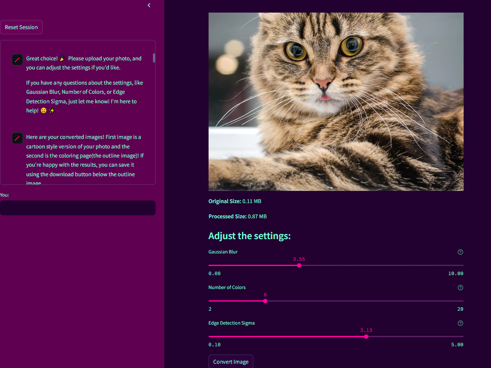
Technical Highlights
Advanced AI Integration
Utilizes GPT-4o-mini for intelligent and engaging chat interactions, and DALL-E 3 for high-quality image generation.
Machine Learning & Image Processing
Implements Scikit-learn, Scikit-image, KMeans clustering, and PIL to efficiently convert photos into coloring pages without relying on resource-intensive libraries like TensorFlow. This results in a streamlined process reduced from 500 to approximately 80 lines of code.
Optimized Performance
Automatically resizes uploaded images to ≤1.5 MB and 1024x1024 resolution using PIL, ensuring quick processing and minimal loading times.
Efficient Image Clustering
Uses KMeans clustering to simplify images into 2-20 color clusters, outlining boundaries with black lines to create clear and engaging coloring pages.
| 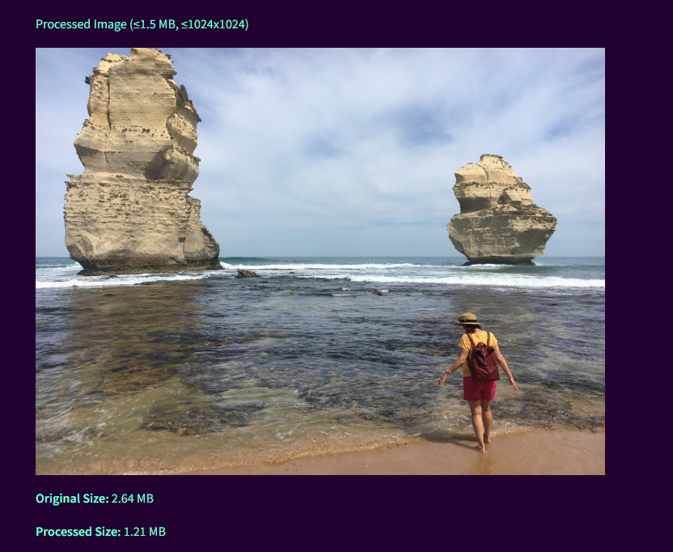 | 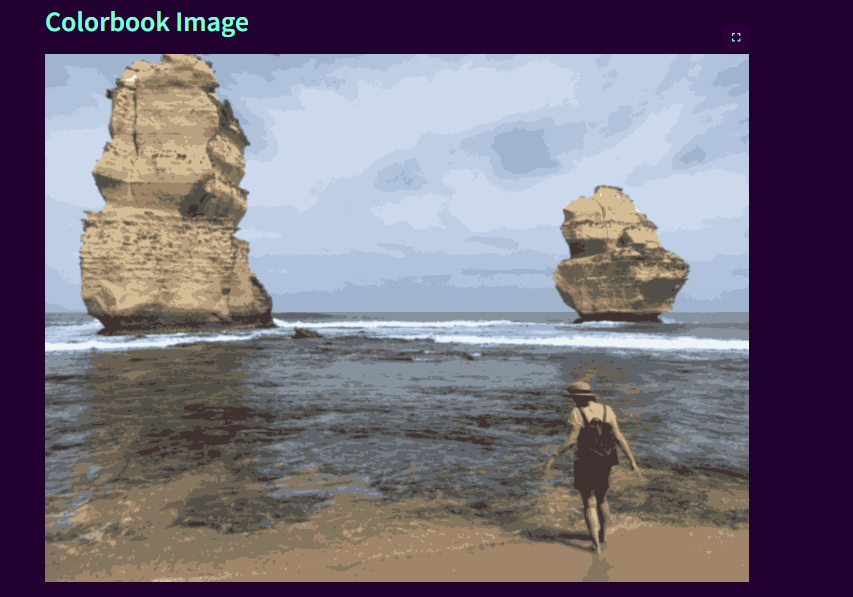 | 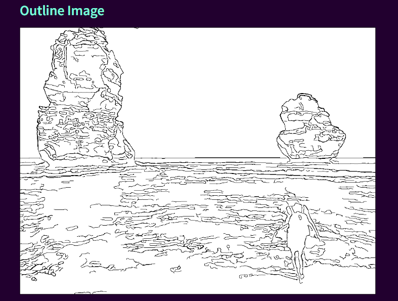 |
User-Friendly Design
Simple navigation through easy commands such as “hi” to start and “main options” to return to the menu, making the app accessible for both children and adults.
Advanced Functionality
Combines machine learning techniques like image clustering and cartoonization with persona-adopted chat assistance, offering a rich and interactive user experience.
Why Choose Lily-1.0?
Lily-1.0 Advanced Coloring Book Generator stands out by offering a sleek and minimalistic interface while leveraging state-of-the-art technologies in the backend. This combination ensures that users enjoy a smooth and engaging experience, whether they’re generating random designs, customizing based on their descriptions, or transforming personal photos into delightful coloring pages. Lily-1.0 is not just a coloring book generator; it’s a gateway to creativity powered by the latest advancements in AI and machine learning.
Gallery
Check out the gallery to see more images created by Lily-1.0.
| 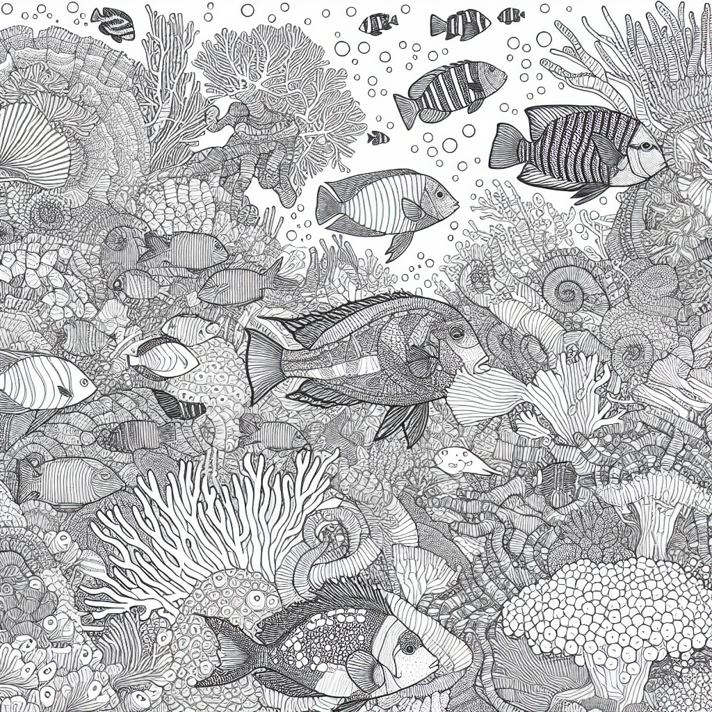 | 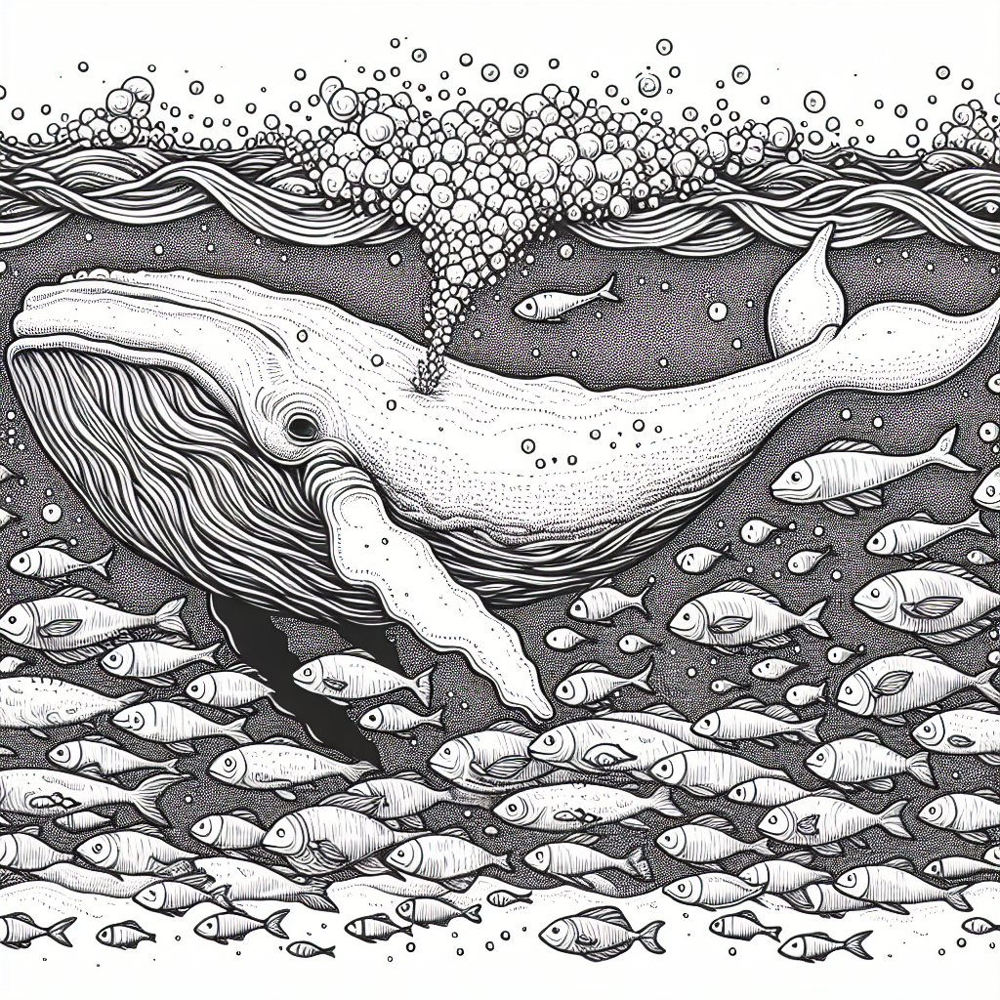 | ||
| 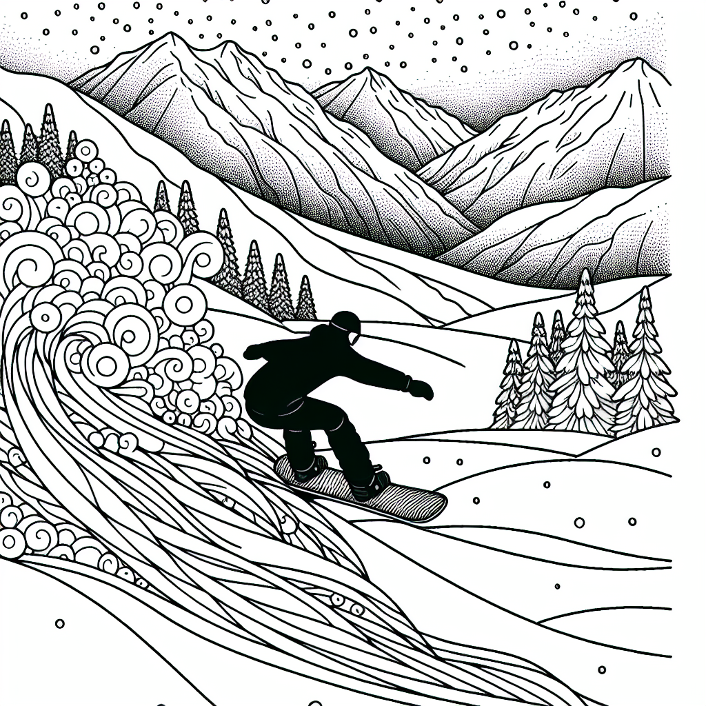 |  |
| 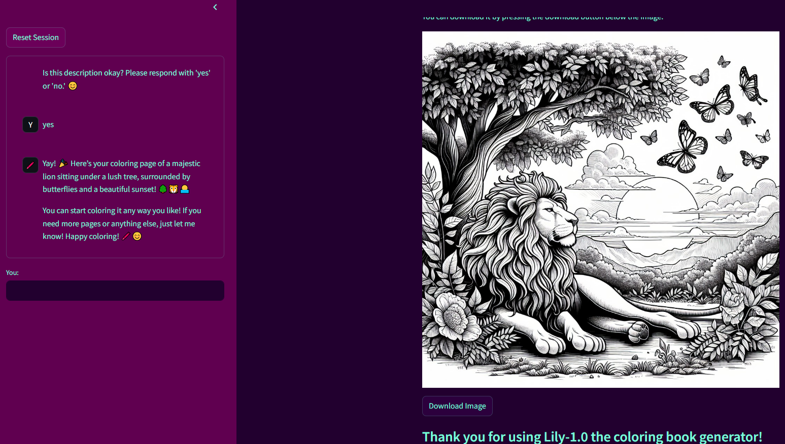 | 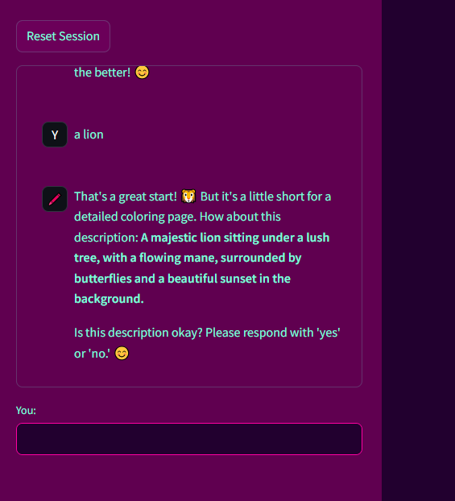 | 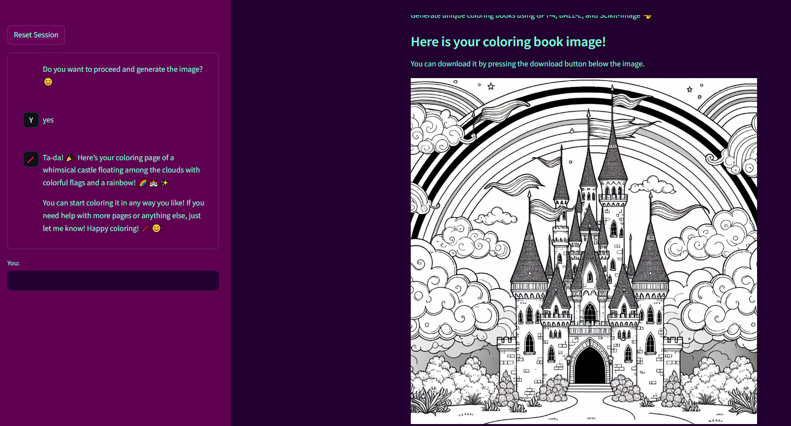 | 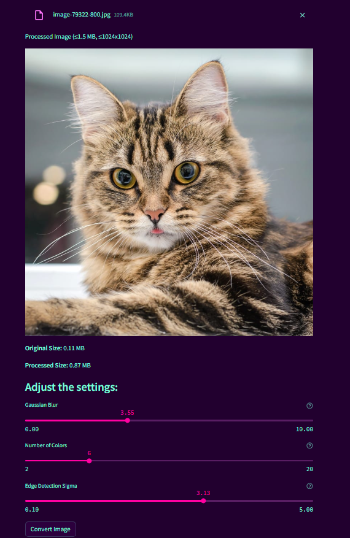 |